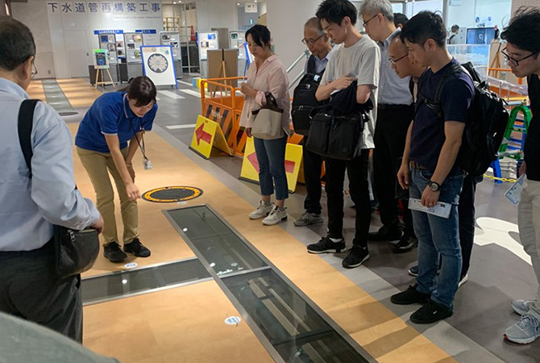
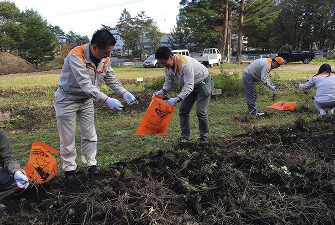
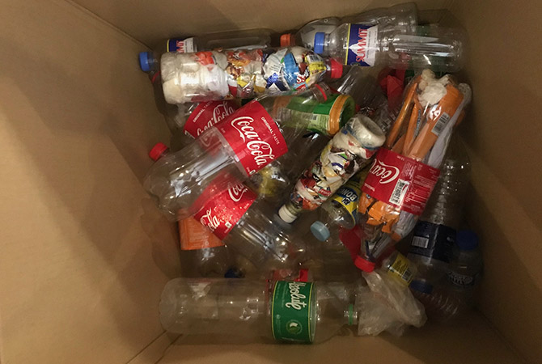

「LIXILコミュニティデー」は、世界各国・地域の従業員一人ひとりが、地域社会に貢献することを目的に行われるLIXILおよびグループ会社全体のイベントです。コーポレート・レスポンシビリティ（CR）戦略の3つの優先課題である「グローバルな衛生課題の解決」「水の保全と環境保護」「多様性の尊重」をテーマに、一人ひとりが地域社会でできることを考え、行動し、世界各地でさまざまな活動が展開されています。
この取り組みは2017年 に始まり、3年目となる2019年には、前年の2倍以上にあたる約15,000人が参加。参加国も昨年の23カ国を大きく上回る33カ国で周辺地域の清掃、植樹、手作り菓子等の販売、子どもたちへの出前授業、生活困窮者への食事の提供、リサイクル活動などを展開しました。
LHT-Jの人事総務統括部では、全員で2週間 の“節水チャレンジ”を実施しました。従業員が作成したオリジナル節水帳票を使って、家族にも協力してもらいながら、歯磨きの時に水の流しっぱなしを止めたり、お風呂を全身浴から半身浴にして節水する等、様々な策を考え実行し、2週間でドラム缶144缶分（28,705リットル）を節水しました。 また、環境への意識を深めるため、東京都下水道局の広報施設「虹の下水道館」のツアーに参加し、水の流れ/下水道の仕組み/節水の大切さを学びました。昨年に引き続き、お台場海浜公園にて清掃活動も行いました。
エクステリア商品開発部の約40名で事業所近くの「アサギマダラの里」(長野県上伊那郡宮田村)にて、秋の七草の一つであるフジバカマの株分け作業を行いました。 アサギマダラという蝶はフジバカマを好み、9月上旬～下旬頃に宮田村へ飛来してきます。フジバカマの株分けは、来年に飛来してもらうための準備の一つとなり、環境保護にもつながります。
活用することで、プラスチックの廃棄量削減が期待できるエコブリック。空のペットボトル内部に使用済みのビニール袋を詰めます。作り方を学んだ後にチームで製作しました。作成されたエコブリックは、環境団体に渡され、学校のスツールやテーブルなどに再利用されます。
LIXILコミュニティデーは、全世界の従業員が一斉に社会貢献活動を行う世界共通の社内イベントとして定着し、今後より多くの従業員が、LIXILが掲げるCR戦略の3つの優先課題への理解を深め、具体的な行動に移していくためのイベントとなるよう、さらに取り組みを進めていきます。
CR戦略の、3つの優先取り組み分野の詳細を掲載しています。